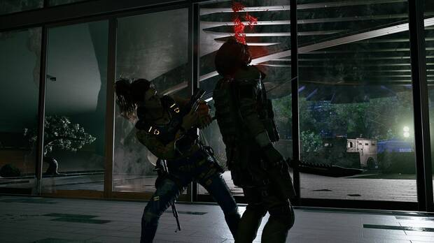

Wanted: Dead, presenta un nuevo tráiler
Este juego de Soleil que recuerda a Devil's Third permitirá luchar con espada y armas de fuego; sigue previsto para el último trimestre de 2022.

110 Industries y Soleil han mostrado un nuevo vistazo a su juego de acción Wanted: Dead, que llevará "la acción con estilo de John Wick" y su violencia a un futuro retro-ciberpunk. Sigue previsto para el último trimestre del año en PlayStation 5, PlayStation 4, Xbox One, Xbox Series X|S y PC
En la versión extendida de este nuevo vídeo de historia podemos ver un nuevo vistazo a su acción desenfrenada y su combate con espada y armas de fuego. Detrás se encuentran algunos creadores de Ninja Gaiden y dará énfasis a los combos, evasiones y otras herramientas para superar las oleadas de enemigos. La principal influencia es Devil's Third de Valhalla Game Studios.
Los jugadores controlarán a la teniente Hannah Stone, líder de la "Unidad Zombi", un equipo de élite que va a donde la policía no llega. La trama tendrá lugar en una "versión oscura y peligrosa de un Hong Kong de ciencia ficción donde necesitarás habilidades afinadas para sobrevivir". No todo será acción, pues habrá momentos en los que Stone podrá explorar el cuartel para relajarse, comer y beber para conseguir mejoras estadísticas antes del combate.
Los jugadores podrán elegir si aproximarse a los enemigos usando el cuerpo a cuerpo o desde la distancia con sus armas. Los desarrolladores prometen "secuencias a cámara lenta geniales y una mecánica de cortar miembros que cambia los patrones de ataque de los enemigos añadiendo estilo y sustancia a los encuentros de combate".
"Creemos que la gente estará agradablemente sorprendida por la variedad que ofrecerá Wanted: Dead cuando se lance este año", ha dicho Sergei Kolobashkin, fundador y director creativo de 110 Industries. "Por supuesto habrá sangre y violencia, pero hay karaoke, bailes, ramen y quizás un juego completo de 16 bits", insinúa Kolobashkin.
